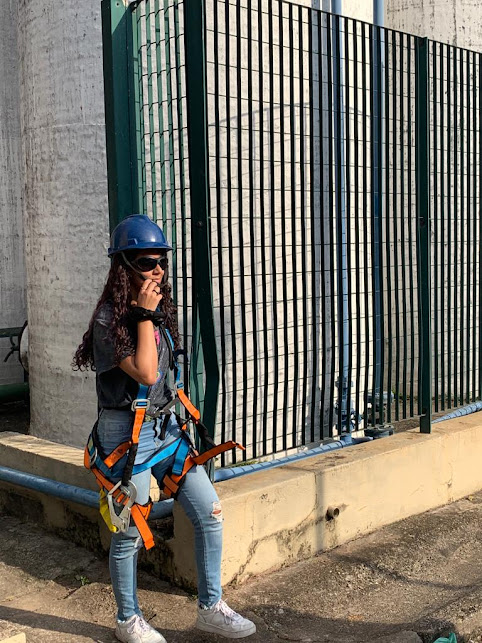

Atividade integrada 1º bimestre
No 1º bimestre de 2023, estudamos sobre radiação em ciências da natureza, para trabalhar com o tema assistimos à série “Chernobyl”, com isso a atividade proposta pela equipe de natureza foi a elaboração de um vídeo onde poderia ser uma entrevista com cientista, uma reprodução de uma cena do documentário, um repórter cobrindo o acidente, etc. A única regra era responder perguntas ao longo do vídeo relacionadas à matéria. Confira o resultado abaixo:
O Método Científico
Este foi um trabalho aplicado no 3º ano para que nós conseguíssemos entender as etapas presentes para concluir um método científico, estudamos o estudo do fisiologista Lazzaro Spallanzani, cujo objetivo era responder às perguntas:
• Como os morcegos se orientam no escuro?
• O que lhes permite o deslocamento com tanta segurança em um ambiente seguro, sem se chocarem com obstáculos?
Veja a conclusão que obtemos neste estudo:


Processos de limpeza da água
Esse foi um trabalho de 2022, onde nosso objetivo era compreender todos os processos de limpeza da água. Tivemos a oportunidade de acompanhar como funcionava o sistema de reaproveitamento de água no Senac e por fim fizemos um relatório e uma maquete que fazia os mesmos processos. Veja a foto do dia da visita ao sistema de reaproveitamento de água do Senac:

Produtos informativos
No 2º ano, nossa atividade integrada de 4 bimestre de 2022 foi alertar sobre os tipos de poluições que estamos expostos em nosso dia a dia. Abordamos os temas poluição sonora, poluição térmica e poluição atmosférica. Criamos informativos que poderiam ser espalhados pelo colégio alertando as pessoas. Confira o resultado: